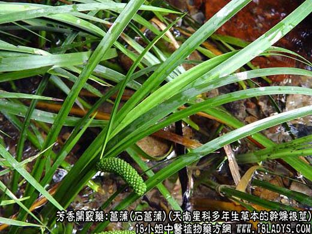
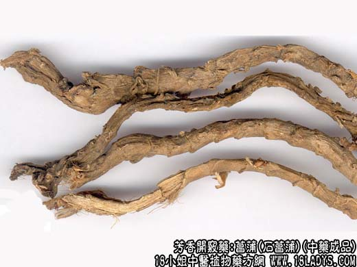
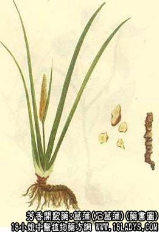

本品为常用中药。始载《神农本草经》，列为上品。原植物来源较多。商品主要有 石菖蒲、鲜菖蒲和九节菖蒲三种。
1、石菖蒲
来源：为天南星科多年生草本植物石菖蒲的干燥根茎。野生于山涧溪水石间。
产地：主产于华东、中南、西南地区。
性状鉴别：根茎扁圆柱形，多弯曲，长3～20厘米，直径0.3～1厘米，常有分歧。表面棕褐色或黄棕色，显干枯皱缩，具细纵纹，有疏密不匀的环节，节间长2～8毫米。叶痕略呈三角形，左右交互排列而凸起呈鳞片 状。根茎下面，具多数圆点突起的细根痕，偶有细根残存。节部有时残留有纤维状叶基，质坚韧。难折断，断面类白色者粉性，淡棕色者短纤维性。皮部纤维较多，横切面可见形成环，气芳香，味微辛。以条粗，坚实，断面类白色，香 气浓者为佳。
主要成分：石菖蒲含挥发油，其中主要为细辛醚(C12H16O3），并有酚性成分。水菖蒲含挥发油，其中主要为甲基丁香酚、细辛醛等。（注：化学元素数字为缩小并在右下）
功效与作用：芳香开窍，逐痰去浊，其原理为：镇静、健胃（促进消化液分泌）、镇痛（解除肠管平滑肌痉挛）、利尿。
附：体外试验对多种皮肤真菌有不同程度的抑制作用。
炮制：切片，生用。
性味：辛、苦、温。
归经：入心、胃经。
功能：通窍除痰，醒神健脑，去湿开胃。
主治：神昏癫痫，健忘耳聋，脘痞满闷不饥，噤口下痢。
临床应用：1、用于湿温病而证见发热、神志模糊或昏迷，烦躁不安、气粗短促，面红耳赤、头昏耳聋，这些情况中医认为属于“湿浊蒙蔽清窍”，而菖蒲辛香，能化浊开窍，配郁金更能加强理气作用而 宣透湿邪。从现代医学观点看，上述症状是由于脑膜或脑实质受炎症刺激而引起的，可见于“流脑”和“乙脑”。菖蒲和郁金可能是通过镇静作用，配合其他清热解毒药，而有助于缓解神昏、烦躁等症状，方如菖 蒲郁金汤。
2、用于治疗狂躁型精神分裂症，表现痰气郁结者，配郁金、白矾等同用，其原理可能仍属镇静，方如白金丸加味，或用石菖蒲6g，糖适量，水煎，每日一剂，分二次服。
3、用于治疗声音嘶哑而见喉炎或声带水肿者，常配腊梅花、桔梗、石斛等，方如菖蒲开音汤。
4、用于健胃，治疗消化不良，表现有肚腹胀痛，肠鸣多气（因胃肠内异常发酵所致）。菖蒲能刺激胃液分泌，并对制止胃肠的异常发酵有一定帮助，常配厚朴、陈皮等同用。此外，治疗噤口痢，用菖蒲解胸膈之热闭，开胸进食，也取其健胃理气作用，配参苓白术散。
5、用于通淋，取其有利尿作用，在治石淋或热淋的方剂中，可用作辅助。
使用注意：石菖蒲与水菖蒲（处方名优称建菖蒲）比较，功用近似，但菖蒲辛香的气味较浓、通窍作用较强，故多用之，其鲜品（名鲜菖蒲）用于高热神昏疗效更好。另有九节菖蒲，为阿尔泰银莲花的干燥根茎， 质较优，芳香开窍之力较石菖蒲更胜。
用量：1.5～7.5g，不宜过量。用于明目、开音，投以1.5～3g作药引便可；用于开窍治疗神昏烦躁，用4.5～7.5g如欲通利大小便，则常需用至9g左右。
处方举例：菖蒲郁金汤（《温病全书》）：石菖蒲4.5g，郁金4.5g，连翘9g，山栀仁6g，菊花6g，淡竹叶9g，岗梅根27g，水煎服。
2、鲜菖蒲
来源：为天南星科植物饯菖蒲（细叶菖蒲）的根茎或带苗全草。野生或栽培，喜生于阴湿沙质土壤。
植物形态：多年生常绿草本。根茎横走，多分歧，长约3～15厘米，直径约5毫米。表面白色而带红晕，有紧密而明显的环节，节间长约2～3毫米，有残留鳞片，节的下面生根。叶丛生于根茎先端，二行排列，线形 ，长5～20厘米，宽约1.5～3毫米，先端尖，全缘，暗绿色，光滑无毛。花茎扁三棱形，肉穗花序自佛焰苞中部侧裸出，无梗，呈圆柱形，花两性，淡黄绿色，花被6、雄蕊6，浆果肉质，倒卵形。
产地：主产于江苏、浙江、湖南、湖北等地。
性状鉴别：同植物形态，而不带花茎。
炮制：剪断，鲜用。
效用：同石菖蒲。
3、节菖蒲
来源：为毛茛科多年生草本植物阿尔泰银莲花的干燥根茎。均为野生。
产地：主产于陕西、河南、山西等地。
性状鉴别：根茎呈纺锤形，略弯曲，长1～3厘米，中部直径3～7毫米。表面黄白色至棕色，有多数横向突起的节（鳞叶痕）交错排列，节上常有小疙瘩根痕。质硬而脆，易折断。断面平坦，粉性，类白色至黄白色 。气无，味淡而微酸。以肥大粗壮，表面黄色，断面白色者为佳。
炮制：生用。
效用：习惯认为与时菖蒲同功。
注意：1、九节菖蒲。历代本草均无记载，至清代陈仁山《药物生产辩》云：“又有一种名外菖蒲者，即九节小菖蒲”。按中医药理菖蒲是芳香开窍药，而九节菖蒲的植物科属及性味，均与石菖蒲不同。 两者效用是否同功，值得研究。
2、除上述三种菖蒲外，还有水菖蒲，别名白菖蒲、臭菖蒲。全国大部分地区有产，野生于浅水的沟溪沼泽。其来源为天南星科植物水菖蒲的干燥根茎。性状与石菖蒲相似，唯体较粗壮而疏松。直径0.8～2厘米，淡黄白色，节间较稀 疏。断面较平坦，少纤维。具特异香气，味苦辛。
此外四川还产销：1、建菖蒲：或称九节菖蒲、大菖蒲。产于西昌高山水沼地区，其原植物可能为石菖蒲的变种—随手香。性状较水菖蒲略小，全体各段粗细不匀。外表棕色或微显紫色，节较密。根痕明显，呈曲回状排列。断面 桃红色或淡棕色，较平整。气香。味微苦。2、藏菖蒲：主要四川甘孜与西藏接壤地区，性状似水菖蒲，只是体粗壮而大，节稀疏，鳞片不太突出。圆形根痕较大，异常明显，数多而稠密，中央凹洞深陷。断面粉棕色，显粉性。香气略淡 。